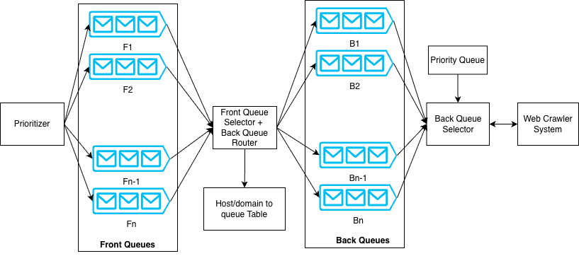
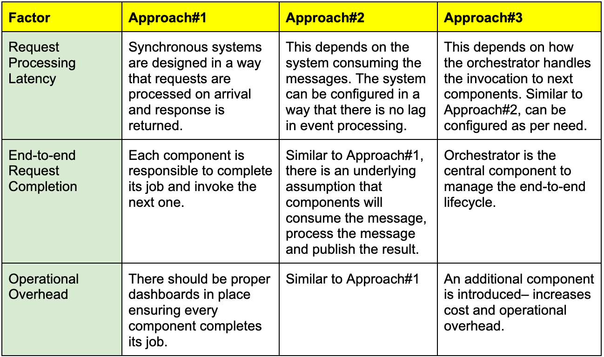
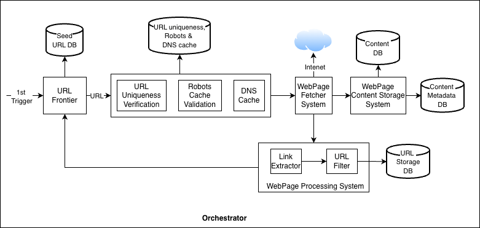
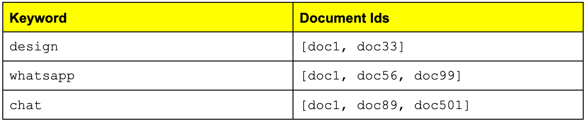
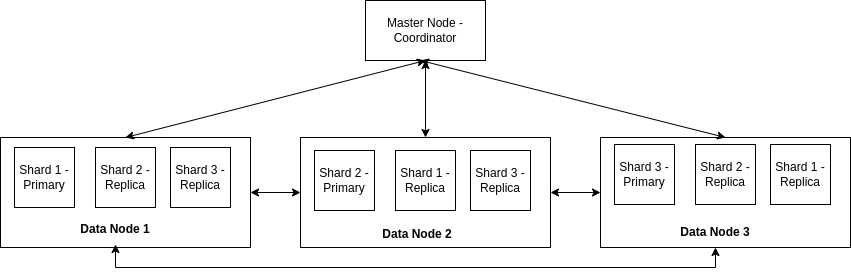
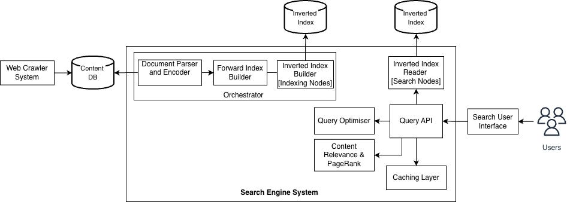

Share this post & I’ll send you some rewards for the referrals.
You type something in the Google Search bar and get instant results.
How does this work?
Today’s newsletter will teach you the architecture of search systems.
At a high level, a search system has two components: a web crawler and a search engine.
A web crawler crawls webpages and stores them in a datastore.
A search engine looks through the data in the datastore to answer user search queries.
Let’s start by understanding the system requirements…
Need public web data, without scraper headaches? (Partner)

SerpApi turns search results into predictable JSON with built-in scale, location options, and protection from blocks.
That’s why engineers use it to ship:
AI applications
Product research
Price tracking
SEO insights
All without maintaining scrapers or infrastructure.
(I’d like to thank SerpApi for partnering on this post.)
I want to introduce Mandeep Singh as a guest author.

He’s an author, educator, and software engineer with a strong passion for building simple, scalable systems. He authored the O'Reilly book "System Design on AWS" and supports others' learning and development by sharing lessons on Cloud and System Design on YouTube.
Checkout his work:
System Design on AWS Book (Also find on Amazon)
System Requirements
(There are two kinds of requirements: functional and non-functional.)
Functional requirements are functionalities from the user's perspective.
It includes:
Fetching top results for a search query.
Including the web page URL, title, and subtitle in each result.
Avoiding outdated results.
Search systems are large and support many functionalities. So let’s limit the scope:
Queries can only be done in English.
Exclude what, why, and how of machine learning components.
The system must follow certain constraints to maintain quality. These are called non-functional requirements (NFRs).
Key NFRs include:
Availability: System must be up and able to respond to search requests.
Reliability: System must return correct and consistent results.
Scalability: User traffic grows over time, so does the content on the internet. The system must handle this growth without performance issues.
Low Latency: Search results should be returned in milliseconds.
These requirements guide the system design. Another important factor is the expected scale, which directly affects design decisions.
Let’s estimate the system scale next…
Back of the Envelope: Understanding Scale
In system design interviews, it’s recommended to make some assumptions after discussion with the interviewer.
Here are some estimations:
Web crawler
The scale of a web crawler depends on how many pages it crawls.
Assume:
Active websites: 200 million
Average pages per website: 50
Now, for each website, there can be both internal and external redirects. The external redirects are part of 200 million.
Then, for internal redirects:
Total pages = 200 million × 50 = 10 billion pages
Now estimate storage:
Average page size: 2 MB
Total storage = 10 billion × 2 MB = 20 PB
NOTE: Web pages can include text, images, and videos. In practice, a crawler may store only the parts needed for search. This estimate assumes we store pages as-is, in the same format in which we download them.
Let’s look into the scale of the search engine system next…
Search engine
Assume Google scale traffic:
Searches per day: 8.5 billion
Searches per second: ~100,000
These rough numbers help shape the design choices.
Next, we’ll dive into the high-level system design…
High-Level System Design
We’ll design a scalable system and discuss the key components of each subsystem separately. Keep in mind that Google has evolved significantly to support this scale, and it is not possible to capture all details in this post.
We’ll first design the web crawler, and then move on to the search engine:
Web Crawler
The crawler needs an initial list of URLs to start with. These are called seed URLs.
There is no single source that contains all websites. So we start with well-known domains and discover new URLs as we crawl.
Here are several ways to discover new website URLs:
Create a platform for new website owners to submit their site details.
Retrieve the list of website links from the website being crawled.
New website URL queried by the user.
The crawler does not visit every website at the same rate. Some sites change frequently, while others rarely update.
The process of deciding how often to visit a website is called crawl scheduling (politeness). The component that decides which URL to crawl next is called the URL frontier.
1. URL Frontier Design
The design shown in Figure 1 is inspired by the Mercator crawler. It uses a two-stage queue system to handle both priority and politeness.

Here’s the architecture overview:
Front queues represent different priority levels. The prioritizer assigns a priority (for example, 1 to n) to each URL. Based on this value, the URL gets placed into a specific front queue. The front queue selector picks URLs using a weighted round-robin approach, so higher-priority URLs get chosen more often.
From the front queues, URLs move to the back queues. A domain-to-back-queue database ensures that all URLs from the same host (for example, example.com) go to the same back queue. This helps enforce politeness rules per host.
A priority queue (implemented as a min-heap) keeps track of when each host can be contacted again. There is one entry per back queue. The heap stores the next allowed fetch time for that host/domain.
The back queue selector removes the host with the earliest allowed time from the heap. It then fetches one URL from that host’s back queue. After the URL gets crawled, the system updates the heap with the next allowed fetch time according to politeness rules.
While Mercator provides a strong foundation, there can be bottlenecks at internet scale:
FIFO queues keep a fixed number of URLs in memory and store most URLs on disk to support a high crawl rate on commodity hardware. At a large scale, frequent disk reads and writes can become a bottleneck. More advanced disk-based algorithms (such as those discussed in IRLBot research paper) can help reduce this overhead.
Another issue is static priority and politeness logic. If a website becomes slow or starts returning errors, the crawler should adjust its crawl rate dynamically. Instead of fixed rules, the system should use adaptive politeness. HTTP response code could be an important factor in this decision.
For example:
HTTP 200: Crawl at normal rate.
HTTP 429: Reduce crawl rate and retry later.
HTTP 500: Retry only after a longer cooldown.
Many domains could share the same IP address (shared hosting, CDNs, cloud providers). Using a single back queue per host can cause skew or a hotspot. The solution is to enforce limits at both the host and IP levels.
For example:
hello.comcan be crawled once every 10 seconds.IP
192.168.1.2can be crawled up to 5 times per second across all domains hosted on that IP.
URL frontier acts on a continuous feedback loop. URL fetcher (Figure 2) reports metrics such as latency and error rate. URL frontier adjusts crawl rate and priority based on these signals.
For example:
If a website responds slowly, increase politeness (reduce crawl rate).
If there are repeated 500 errors, lower the website’s priority.
Once URL frontier selects a URL, the crawler visits the page. Before crawling, the system should check whether the page has already been fetched or modified. There is no benefit in fetching the same content repeatedly.
Next, let’s discuss URL duplication and content duplication handling...
2. Web Page Similarity and URL Duplication
A web crawler can run into infinite loops. This can happen if:
A page links to itself.
The same URL appears many times in different places.
URLs are generated dynamically in large numbers.
To prevent this, the crawler must detect duplicate URLs before crawling them.
URL Deduplication
How do we check if a URL was crawled?
One approach is to store all crawled URLs in a global lookup table (HashMap). As many crawler instances run in parallel, this lookup must be shared across machines. A distributed key-value database can be used for this purpose.
This lookup needs to be fast.
Disk-based databases increase latency because of disk reads. An in-memory system is faster but must handle very large amounts of data. The data can be partitioned (sharded) across many machines to scale.
We can use a Bloom filter to reduce memory usage.
A Bloom filter is a space-efficient data structure that checks whether an element already exists in a set. It’s probabilistic, that is:
If it says “no,” the URL definitely has not been seen.
If it says “yes,” the URL might have been seen.
This can sometimes cause a new URL to be skipped, but for large-scale crawling, this tradeoff is acceptable.
The URL set can be distributed across machines using consistent hashing. This ensures even distribution and supports adding or removing servers without major reshuffling.
Now let’s focus on content duplication…
Content Deduplication
Even if URLs are different, page content might be the same.
A simple word-by-word comparison is expensive and inefficient. Instead, crawlers compute a fingerprint of the page content. One common technique is Simhash algorithm, which generates a compact representation of the page.
Similar pages will have similar fingerprints, making duplicate detection efficient.
Handling Intentional Duplicates
Some websites intentionally publish the same content under different URLs.
Search engines support a canonical link element to handle this scenario. Website owners can specify the preferred URL for a piece of content. The crawler stores only the canonical version for indexing.
The bottom line:
URL deduplication occurs before crawling.
Content deduplication occurs after fetching the page.
Robots and Exclusions
Before crawling, the system must check whether the URL is allowed.
Web servers can define rules in the robots.txt file to control crawler access. The crawler must respect these rules. Also, the crawler may maintain its own blocklist for certain websites or regions.
After passing these checks and finishing the crawl, the system stores the page content.
Next, let’s discuss storage design…
3. Web Crawler Storage
The choice of database depends on what we want to store and what format.
Here are a few options:
Store the entire webpage as-is
This is like saving a webpage using “Save Page As” in a browser. The full HTML content is stored without modification.
Extract and store only the required data
The crawler processes the page and saves only useful parts, such as text and metadata.
Store the page in a document database
Since a webpage is essentially a document, it can be stored in a document database.
In our case, the data has no fixed structure, and we do not need to run complex queries on it. So the simplest approach is to store the entire webpage.
An object store, such as Amazon S3, is a good fit for this.
Object stores are scalable and highly durable, so we don’t have to worry about scalability and reliability. At a very large scale, some companies build and manage their own distributed storage systems, but that is a separate and complex topic.
NOTE: Colossus is Google’s distributed storage system. It replaced Google File System (GFS) and is designed to support Google’s massive scale.
Metadata Storage
We also need to store metadata. It includes:
URL
Location of stored content
Last crawled time
Status or crawl result
This requires a key-value style database, where:
Key = URL
Value = Metadata
A relational database could also work, but since we do not need complex joins or relationships, a distributed key-value store is more suitable. The data should be partitioned (sharded) for scale.
Now that we have covered the main crawler components, let’s discuss how these components work together to crawl the web…
4. Web Crawler Components Coordination
There are a few ways to coordinate the crawler components. Each option has its tradeoffs:
Approach #1: Synchronous communication
Each component exposes an API and calls the next component directly. If different components run inside the same service (microservice), they can call each other via local method calls.
Approach #2: Choreography
Each component publishes an event when it finishes its work. The next component consumes the event and continues the workflow. This is also known as event-driven architecture.
Approach #3: Orchestration
Add an orchestrator to manage the crawler’s lifecycle. The orchestrator triggers each step, tracks progress, and handles retries. Components can still communicate synchronously or asynchronously, depending on what fits.
…So which approach fits best here?
You might have heard the statement: “Everything is a tradeoff in system design.” This is very true: all approaches are best in one scenario but can be the worst in others.
Let’s do a trade-off analysis for the web crawler system:

For the crawler, Approach #3 (Orchestration) makes more sense. Here’s why:
End-to-end monitoring: You can track, retry, or debug each component.
Failure handling: If a component is unhealthy, the orchestrator can trigger a retry, pause, or reroute work.
Scheduling support: Orchestrator can schedule recrawls and also handle new URLs discovered during crawling.
Next, let’s combine these components and create a high-level diagram…
5. Web Crawler System Components
Figure 3 shows the end-to-end workflow.
The blocks in the diagram are logical components, not separate microservices. You can deploy them together or separately, depending on scale, cost, and operational needs.

Let’s summarize all the components and workflow:
URL Frontier
Starts with seed URLs and outputs the next URLs to crawl.
URL goes through certain validations, such as:
URL uniqueness (have we seen this URL before?)
Verification in robots.txt cache (is crawling allowed?)
Fetch IP address from DNS cache. This cache is continuously updated once the URL is fetched from the internet.
Webpage Fetcher System
Downloads the page content and stores it in the content database.
Some pages load content in multiple steps using JavaScript. For this, fetcher may need a headless browser to render the page and get the final content.
To save bandwidth, the system can cache shared resources, such as common JavaScript and CSS files, instead of downloading them repeatedly.
Webpage Processing System
Parses the downloaded page to extract new links. Then it filters these links using rules such as:
Blocklists
URL patterns
Region-based restrictions
Feedback loop
The extracted URLs are then sent back to the URL frontier, and the crawl cycle continues.
NOTE: A Domain Name System (DNS) handles mapping between domain names (such as google.com) to their IP addresses.
Web crawler’s job finishes as soon as the web page is downloaded and stored. Search engine then takes this content, builds indexes, and serves user queries.
Next, let’s explore the architecture of the search engine system…
This newsletter is inspired by Chapter 15 of the O’Reilly book “System Design on AWS”. Get a copy of the book right now.

Reminder: this is a teaser of the subscriber-only post, exclusive to my golden members.
When you upgrade, you’ll get:
Full access to system design case studies
FREE access to (coming) Design, Build, Scale newsletter series
FREE access to (coming) popular interview question breakdowns
And more!
Search Engine
Web crawler downloads webpages and stores them in an object store. Search engine uses this stored data to answer user queries.
Let’s start with a tiny example:
Assume the crawler has stored 10 webpages, including this post. A user types “Design WhatsApp” into the search bar.
What should the search engine do?
Open the first document and check if it contains the query text (similar to running
grepsearch on a file).If not found, check the second document, and so on.
This approach is slow and inefficient, especially when there are billions of pages. So it does not scale. Instead, the search engine needs a data structure that can quickly return a list of documents containing specific keywords.
This is where an inverted index comes in. It maps:
keyword → list of documents containing the keyword
For example, take the query “Design WhatsApp”:
Index looks up “Design” and “WhatsApp”.
It retrieves the list of documents containing those keywords.
Then it combines and ranks the results.
This allows the search engine to find relevant documents without scanning each page.
Next, let’s look at how inverted indexes work and how search databases use them…
1. Search Engine Storage
There are many options for a search database, including managed cloud services and open-source ones. A popular choice is Elasticsearch, so let’s use it as an example.
Assume crawling https://newsletter.systemdesign.one/p/whatsapp-system-design
Title: System Design Interview - Design WhatsApp
Body: “Designing a real-time chat application like WhatsApp is…”
Elasticsearch doesn’t store the raw HTML; instead, it converts it into a JSON document. Then it breaks the text into keywords to build an inverted index.
Figure 4 shows the basic idea:

Elasticsearch partitions data into shards, and each shard contains a subset of documents.
An Elasticsearch cluster contains:
Master node (cluster coordination)
Data nodes (store data and serve queries)
Here’s what happens when a document is indexed:
It writes data to a primary shard on a data node
Then it gets replicated asynchronously to replica shards (Figure 5)

The data is now stored in Elasticsearch and is available for querying.
Here’s what happens on a search query “design whatsapp”:
Elasticsearch extracts the keywords: design, whatsapp
Coordinator routes the query to the shards that contain matching documents
Shards return matching document IDs
Results are ranked, merged, and returned as search results
Elasticsearch can work well for many use cases. Let’s discuss if it can handle our scaling requirements:
All three shards (1 primary, 2 replicas) share the same CPU and RAM resources of the data node. For writes, indexing performance will be impacted until the data node comes back online. Adding replicas helps with read traffic, but writes still compete for the same resources.
If you need a custom ranking (for example, PageRank algorithm), you need logic outside Elasticsearch’s built-in ranking model.
So at a very large scale, it becomes a bottleneck.
Part II of the “System Design on AWS” book covers the architectures of multiple AWS services, with a key focus on decoupling compute and storage.
Is it possible to architect the system in a way to separate write and read traffic?
Yes! One common approach is to split the indexer and search components into two independent systems (see Figure 6).
Indexer (write path): processes new or updated documents, builds index shards, and uploads a new shard version to shared storage (for example, a distributed file system like Colossus).
Searcher (read path): downloads the shards and serves read traffic using its local copy.
This design reduces resource contention because heavy indexing work does not run on the same machines that handle user queries. Reads and writes can scale separately.
A common pattern I’ve seen (and applied) to optimize writes is batching.
If writes are not high priority and don’t need to be applied right away, they can be batched together. This reduces overhead by uploading fewer shard versions, using bandwidth more efficiently, and avoiding frequent small updates to the indexer.
Next, let’s look at the searcher.
After the inverted index returns a list of matching document IDs, we still need to return the actual (user-facing) search results: title, short snippet, and the URL.
There are two ways to do this:
Option #1: Store information in the inverted index
Along with document ID, the inverted index can store extra metadata such as title, URL, and a short snippet. This simplifies queries, but it increases index size, infrastructure costs, and memory usage.
Option #2: Use a separate forward index
Maintain a separate data store called a forward index that maps:
document ID → (URL, title, snippet)This adds another component to maintain and keep up to date, but it keeps the inverted index smaller and makes it fast to fetch result details once you know the matching document IDs.
Why not fetch from the raw page store?
Reading documents from the object store (or raw HTML storage) for every query is too slow and increases the load.
The forward index could be a better approach here with direct mapping available. It also helps rebuild parts of the inverted index without rereading raw source documents.
Now that we’ve covered how document details are retrieved, let’s discuss ways to keep search latency low…
Know someone who wants to learn system design? Consider gifting a subscription:
2. Keeping Search Latency in Check
What thoughts come to mind for handling high read traffic?
Add more read replicas (scale out).
Add caching (serve from memory instead of disk).
We’re going to leverage the best of both worlds.
Read replicas increase query capacity, but queries can still be slow if every request needs disk access. Keeping all data in RAM is usually too expensive at a large scale - RAM is much more costly per GB than disk. A common approach is to keep only the hot data in memory and load it from disk or replicas when needed.
Caching can be added at different layers:
Instance cache: local cache in the application server.
Shared cache: cache shared across all application servers.
Regional cache: cache shared within a region.
Edge cache: cache at CDN/edge locations.
Browser cache: client-side caching for repeated requests.
Again, no approach is perfect. Here are some common problems and tradeoffs:
Spiky traffic: Adding replicas takes time. For sudden spikes, it helps to keep infrastructure pre-warmed (running but idle) so you can scale faster.
Thundering herd: If many requests miss the cache at the same time for a popular query, they can all hit storage simultaneously, overloading it. A common fix is request coalescing: allow only one request to refresh the cache, and make other requests wait for the same result.
Stale data: Replication and caching are often asynchronous, so results can be slightly outdated. This is usually fine for a system that tolerates eventual consistency. If you need real-time freshness (for example, live sports scores), you need a different design.
So far, we’ve covered storage and data retrieval.
The next step is ranking - deciding which matching results should appear first.
3. Search Engine Page Rank
We won’t go into much depth on page rank implementation and will only focus on a high-level idea.
Ranking combines many factors, such as:
Number of inbound links: How many pages link to a page, and how important those linking pages are.
Website Reputation:
.eduor.govmay be given higher priority.User and context signals: The term “football” in the USA and Europe can return totally different results.
Content signal: Does the page actually answer the query, and do many users click on the link from the results.
PageRank is one specific link-based signal. At a high level, it treats the web as a graph:
It treats the web as a graph
Each page is a node
Each hyperlink is an edge
Pages receive a higher score if they’re linked to important pages
Computing link-based scores at scale is a graph-processing problem.
Google uses a combination of Colossus, Bigtable, and Pregel for storing and computing page rank.
Colossus is a file storage system that can store data in raw format.
BigTable is a wide-column NoSQL database. It can store all outbound links for a URL in individual columns. This implementation is very similar to an adjacency list in graph theory, where each node maintains a list of its neighbors.
Pregel is used for in-memory graph processing. This is an improvement over MapReduce because MapReduce uses disk for storing intermediate states and for data transfer. Pregel transfers data in-memory between the workers.
Pregel can pick up rows from BigTable for processing. If needed, the intermediate states can be saved to Colossus, and other workers can pick up from wherever they left off.
There can be many inbound links for very popular websites like youtube.com. To reduce network overhead, Pregel can combine multiple messages (think of a batch update) before sending them across the network, improving efficiency.
When storing URLs in systems like Bigtable, key design matters. For example, storing URLs in reversed domain format, such as com.youtube.www/video_id, groups similar domains together in sorted storage. This makes prefix scans efficient for retrieving all data related to a domain.
Finally, the search engine needs a single public entry point for users. This component is called the Query API. It receives search requests and routes them to the appropriate backend services.
Let’s dive in!
4. Search Engine Query API
Query API acts like a gateway.
It receives user search queries, coordinates with backend components, and returns the final ranked results. Query API interacts with several components, such as:
Inverted Index Reader (Searcher) and Cache layer
It sends the processed query to the searcher, which looks up matching document IDs using the inverted index. The caching layer serves popular queries directly from memory.
Query Optimizer
It’s responsible for:
processing the raw user query,
extracting keywords,
removing stop words (like “the”, “is”),
correcting spelling,
expanding synonyms,
splitting complex queries into sub-queries if needed.
Ranking Component (Content Relevance + PageRank)
After retrieving candidate documents, the system ranks them. Ranking combines:
content relevance (how well the document matches the query),
link-based signals such as PageRank.
Some ranking signals are pre-computed offline (for example, PageRank). Others are calculated dynamically at query time (for example, text relevance scoring). Sorted results are then returned to the user.
Query API must be highly scalable because it is the entry point for all user traffic.
Let’s walk through how a search query gets handled:
1 Global traffic routing
Users should get responses from the closest data center for low latency.
One common approach is Global Anycast IP. In this setup:
All users connect to the same public IP address.
Border Gateway Protocol (BGP) automatically routes the request to the nearest data center or edge location1.
This helps reduce latency and improve response time.
2 Load balancing
Once the request reaches a data center, a load balancer distributes traffic across different servers. Google uses a system called Maglev for load balancing. Its job is to evenly and reliably route incoming requests across servers.
3 SSL termination
In production traffic, SSL termination is often handled at the frontend (for example, at the load balancer or edge proxy). This reduces overhead on backend services, as they do not need to handle encryption and decryption themselves.
I personally recommend this as an effective approach.
4 Query processing
After the request reaches the Query API, the query optimizer:
clean up the query,
remove stop words,
correct spelling,
break it into multiple sub-queries if needed.
The Query API sends the query (or sub-queries) to multiple shards in parallel. Each shard returns matching results. The system merges and ranks the results, then returns the top results to the user.
5 Pagination
Only the first page of results (e.g., the top 10) is returned initially. Extra pages are fetched only if the user requests them.
This keeps latency low and avoids unnecessary work.
The above works all great in theory, but think for a moment!
At 100k queries per second, each query will be subdivided and sent to the inverted index shards:
Query API sends many parallel requests (fan-out)
It then waits for many responses to return (fan-in)
This creates massive network traffic and could become a bandwidth bottleneck.
By default, these shard requests usually run over Transmission Control Protocol (TCP)2. TCP is reliable, but in a fan-in pattern, it can introduce two common latency issues:
Issue #1: Retransmissions and waiting on missing packets
If a switch drops packets or packets get lost, TCP retransmits them.
During fan-in, the Query API often can’t finish the response until the missing data arrives, so a single lost packet can delay the whole query. This increases latency and consumes extra network and CPU resources.
Issue #2: Tail latency from slow shards
Even if most shards respond quickly, a few responses can be slow because of load, GC pauses, cache misses, or temporary network congestion. Since the Query API waits for the slowest responses, this creates tail latency and slows down end-to-end query time.
Let’s briefly discuss architectural improvements to work around the issues.
Issue #1: Solution
Could UDP help?
UDP is not a good fit for this use case because it does not guarantee delivery, ordering, or retransmission. If packets get lost, you would have to rebuild reliability at the application layer. For search results, missing data can lead to incomplete or incorrect results, so UDP is not ideal.
What about QUIC?
QUIC is a modern transport protocol built on top of UDP, but it adds reliability similar to TCP.
QUIC supports multiple independent streams over a single connection3. With TCP, packet loss can block the entire connection (head-of-line blocking) because all streams share one ordered byte stream. With QUIC, packet loss on one stream does not block other streams, reducing latency.
So QUIC can improve tail behavior under packet loss by reducing the amount of unrelated work that gets stuck behind a single lost packet.
Issue #2: Solution
Hedged requests (duplicate requests) are a solution.
If a shard does not respond within a threshold time, the system can send the same request to a replica shard. The first response that comes back is used; the slower one gets ignored. This helps when a shard is slow due to transient issues, such as load spikes or GC pauses.
Another option is to return results without waiting for every shard. This lowers latency, but it can miss some matches. The decision here could be based on the importance of the sub-query within the list of sub-queries extracted from the primary user query.
Now that we’ve covered storage, retrieval, and latency mitigations, we can put everything together into a high-level architecture…
5. Search Engine System Components
Figure 7 shows end-to-end interaction in the search engine system.

Summarizing all the components:
Document Parser and Encoder
This component handles tasks such as parsing documents and removing unnecessary data. The data is passed to the forward index.
Forward Index
The forward index stores the data and passes it to the inverted index for reverse mapping.
Query API
This component acts as a request gateway–it handles user queries and returns appropriate results.
Query Optimizer
This component extracts keywords from the query, performs spell checking, removes redundant words, and so on.
Inverted Index Reader
This component downloads the data generated by the Inverted Index Builder and serves as a router for returning search results. It can intelligently route the request to a particular shard and gather the results.
Building the forward and inverted indexes is done as a pipeline (batch or streaming).
An orchestrator can manage the end-to-end workflow, including retries, monitoring, and backfills. This is like the orchestration approach discussed in the crawler section.
Next, since availability and reliability are key non-functional requirements, we should add observability to monitor the system end-to-end.
6. Observability for Web Crawler and Search Engine
Observability means being able to understand how the system is behaving in production. It includes:
metrics and alerts to detect problems early,
logs to debug failures,
tools to trace requests across components.
Observability is useful not only after something breaks, but also as an early warning system. For example, if search latency exceeds a threshold, it could be due to thread contention, expensive queries, cache misses, slow shards, or network delays.
Here are some web crawler metrics to monitor:
Pages crawled per second. A drop shows issues in the URL frontier, fetchers, DNS, or downstream processing.
HTTP error rates (4xx and 5xx). Spikes show blocking, site issues, or crawler bugs.
Processing latency. Track DNS resolution, fetch time, parsing time, and storage write times.
Here are some search engine metrics to monitor:
End-to-end query latency. Track p50, p95, and p99 to catch tail latency issues.
HTTP error rates (4xx and 5xx). Helps detect client errors, backend failures, and overload.
Cache hit (or miss) ratio. A sudden drop can increase backend load and raise latency.
Now that we’ve covered observability, we can conclude the design.
Conclusion
Web crawlers and search engines are complex architectures.
It requires a lot of iteration to crawl the web efficiently and present the most relevant search results to the users. Over the years, many papers have been published on distributed web crawlers and search engines. It’s recommended to read them before implementing one of your own. This will help you avoid reinventing the wheel and draw inspiration from work that has already been done.
System design is never about building perfect solutions; they don’t exist.
It’s always about the trade-off analysis you do over and over. The expectations from the system can (and will) change over time; it’s up to you to decide what makes sense at a particular point in time.
In system design interviews, there are two important questions you should be able to answer for the suggested design:
How will different components scale?
Is the architecture sufficient to serve the suggested scale?
If something breaks in the architecture, what’s the mechanism to handle it?
Happy Building and Best of Luck for System Design Interviews!
👋 I’d like to thank Mandeep for writing this newsletter!
Also, find him on:
He’s an author, educator, and software engineer with a strong passion for building simple, scalable systems.
Know someone who wants to learn system design? Consider gifting a subscription:

Thank you for supporting this newsletter.
You are now 200,001+ readers strong, very close to 201k. Let’s try to get 201k readers by 27 February. Consider sharing this post with your friends and get rewards.
Y’all are the best.

Recommend reading this blog from X Engineering on the use of anycast, common problems, and their resolutions for faster response times.
I recommend reading through Chapter 6 of the “System Design on AWS” book for a detailed dive into different protocols and communication patterns.
Facebook faced a similar networking issue with its memcached servers, which was resolved through some optimisations to the UDP protocol.